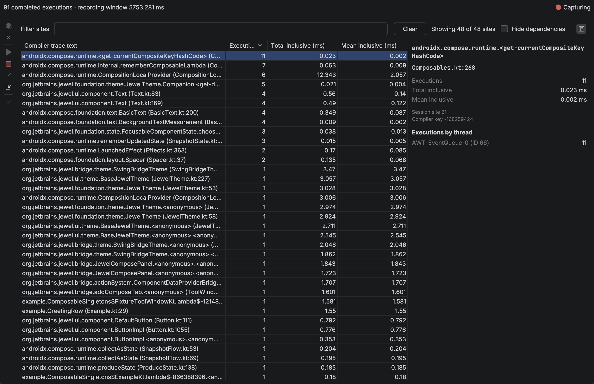

Live inspection
Select the run configuration you normally use to start a Compose UI, then choose Run with Compose Inspection. The plugin launches a temporary copy of that configuration, connects to its target, and starts capture when Compose loads.
The target must use a local JVM of version 21 or newer. You do not add a dependency, change application source, or copy a connection token.
Launch
- Choose Run with Compose Inspection from the run widget (beside Run and Debug), the configuration gutter, or Run → Run with Compose Inspection. The default shortcut is Ctrl+Alt+Shift+F10, or Ctrl+Option+Shift+R on macOS.
- Use your application. Execution counts update on the Live recompositions tab in the Compose Inspection tool window.
- Click Stop Capture, then Export Recording to save the result. A notification can reveal the saved file in the system file manager. Import Recording loads a saved file into this tab and the editor badges. Close Recording clears that session.
Tools → Install Inspection Support can prepare the agent without launching.
The launch uses a temporary copy of your configuration. Its existing build steps run before the application starts. Your saved configuration stays unchanged. A normal Run starts your application without the inspection agent.
The plugin does not connect to remote hosts.
Jewel Standalone and Gradle
Select a Gradle run configuration with one explicit application task, such as :desktop:run. Use the full task path when different modules have tasks with the same name. The task must be a JavaExec task. A task that only delegates to another task is not sufficient. Included Gradle plugin builds that run while the project configures are ignored until that application task is in the task graph.
The plugin adds the agent to that application's JVM. It does not add it to the Gradle daemon. The temporary launch disables Gradle's configuration cache. Your project's configuration stays unchanged. Remote targets, compound configurations, and runIde split mode are not supported.
IntelliJ Platform and Bazel
Open the project's supported IntelliJ model and select its local Application or Kotlin run configuration. Keep the normal Bazel build step in that configuration, if the project requires one. Then choose Run with Compose Inspection.
The selected configuration must start the target IDE in a separate JVM. Open the plugin UI in that target IDE and interact with it to produce trace events. The Compose Inspection tool window in the authoring IDE receives those events. JBR 25 is supported by the agent's bytecode reader.
The plugin does not convert an arbitrary Bazel command into an IDE launch configuration. Use the project's existing configuration that already starts its development IDE.
Read the live capture
The Live recompositions tab shows capture state, completed execution count, and recording window. Select a trace site to inspect its details in the side pane. Filter the table, with completion from recorded compiler text, to focus on one composable.
The table starts sorted by executions, highest first. Double-click a row to open its Kotlin file when that file resolves. Choose Hide dependencies to keep sites whose files are in this project's source and hide Compose, Jewel, and other library sites.
Matching Kotlin files in this project or its dependencies show inclusive duration as a badge at the end of the matching function or property line. Hover it for its share of recorded inclusive time and the execution count. The value uses the same millisecond format as the live table. Click a duration badge to select that site in the tool window. Click a file name in the details pane to open that Kotlin file when it resolves.
The recording window is elapsed capture time. Inclusive durations also contain nested calls.

Waiting for Compose means that the connection exists but the target has not loaded its Compose runtime yet. Open a Compose surface in the target. Capture starts automatically when a supported runtime becomes available. An unsupported runtime or multiple runtime copies stop capture with an explanation. The agent captures trace callbacks on the composition thread. Pairing, site totals, and the event log run on a low-priority background thread so composition stays off the recording store.
Stop, disconnect, and limits
Stop Capture stops recording and leaves your application running. Disconnect Target closes inspection and also leaves the application running. Run with inspection again to create another connection after disconnecting. Use the normal Stop control in the Run tool window to stop the application itself.
Hover the capture status to read why a limit stopped recording. The session stops after 100,000 completed executions, 1,024 sites, 64 threads, depth 64, or one hour.
Starting another capture asks before discarding a nonempty, unexported result. If capture has already ended, Cancel keeps that result. Keep Recording is only offered while capture is still running. A confirmed final result remains exportable after disconnecting. Disconnecting during capture leaves an incomplete snapshot, which cannot be exported as a final recording.
Import Recording and Tools → Open Compose Recording load a saved file into this tab. That replaces the current result and disconnects a live target. Close Recording clears the current result and its duration badges. Both actions ask before discarding a nonempty unexported result.
The live view does not identify initial composition, skipped calls, invalidation causes, or composition instances. Missing compiler trace markers can hide activity. An empty live view does not prove that the application is idle.
A session accepts at most 100,000 completed executions, 1,024 sites, 64 threads, and a nesting depth of 64. Compiler text is limited to 1 KiB per site. Files are limited to 24 MiB, and the recording window is limited to one hour. Live snapshots send per-site totals; the full event list is read from the target when capture stops. Reaching a limit ends capture and marks the result Truncated. The recorder discards unfinished root segments and reports their counts. Later activity is unrecorded; its extent is unknown. Clock failures produce Failed recordings. The report preserves completed events from before the failure.
Target, compiler, runtime, and build labels are declarations. They do not prove a build identity. Runtime classloader identity remains unknown. Sessions are not merged.
Live inspection uses an authenticated loopback connection to the configured development target. Automatic launches use a startup agent to observe Compose trace callbacks. The older manual recorder adapter is a contributor-only path; see Recording adapter.